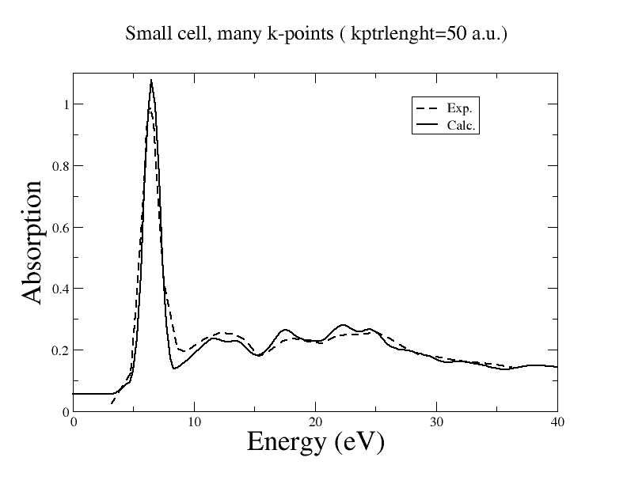
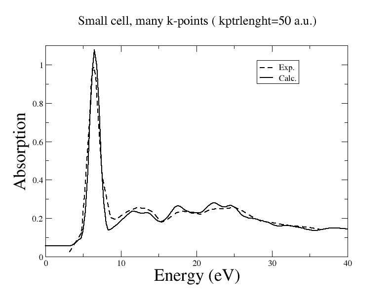
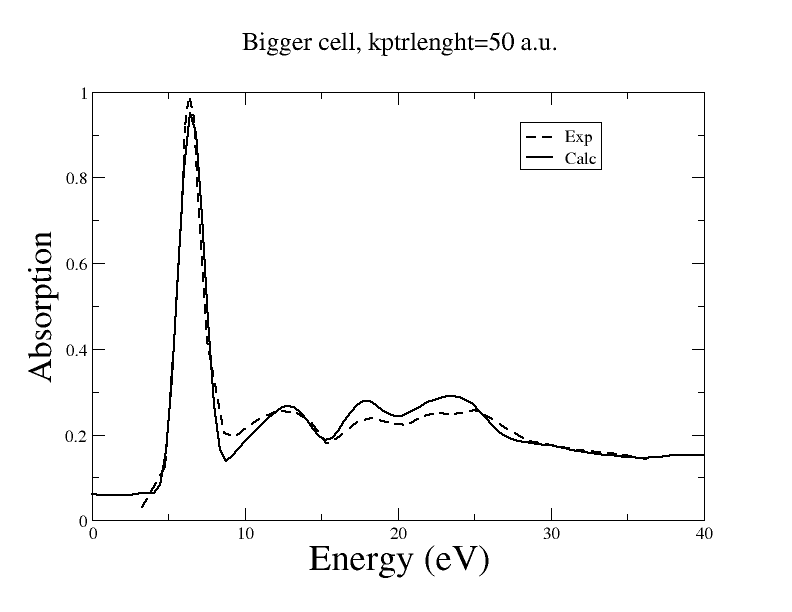

Xanes: Calculating the spectra of quartz
The purpose of this lesson is to get familiar with the steps required to generate an x-ray absorption spectra, in particular in the Xanes region. These steps are three :
- the first step consists in generating a PAW patch for the pseudopotential in order to extend its validity over the Xanes region. This region corresponds to photo-electron energy from zero to few Hartree. We will do this using atom and pseudo programs which are distributed with the BigDFT project.
- The potential felt by the photoelectron can be generated by a standard BigDFT run. A non SCF potential can also be generated summing atomic densities. This can be done using abscalc with the appropriate option.
- We will calculate the spectra using a paw-patched pseudopotential and the local potential from a BigDFT calculation. Using several k-points is equivalent to calculate the spectra in a larger cell whose size is a multiple of the unit cell. The number of k-points is important to get smoother spectra free from spurious band discrete sampling effects. We will explore the importance of this parameters and of other parameters like the charge of the system, and the light polarisation.
This lesson may take XX minutes for the basic point and we give track for further testing. We suggest to coordinate your runs with your neighbours so that the test of the dependancies on different choices of certain parameters can be parallelised.
Patching a pseudopodential with a PAW correction
Generating the potential of the AE reference
Our goal is to calculate the Xanes spectra of Quartz at the K edge of Silicon. In order to do so we need to construct a pseudopotential, with the program pseudo, which describes a Silicon atom with one hole in the 1s shell. Asimple way to do this, that we will follow here, consistes in starting from the pseudopotential of the Z+1 element, (Phosphorus in this case), that we will patch with a PAW correction that we are going to build. The Z+1 approximation consists in replacing a Z nuclear charge plus on 1s electron, with a Z+1 nuclear charge plus two electron. This keeps the total charge unchanged. It would possible, with the program pseudo, to generate a new pseudopotential for Silicon with one hole, and then patch it. We focus here instead on building only the PAW correction which is the original part of this method, and we start therefore directly from the Z+1 pseudopotential which is already given.
The calculation proceed in two steps. First we generate with the program atom the very same all-electron (AE) reference that has been used to create the pseudopotential. This first step is used to generate a radial potential that will be used, in the second step, to generate AE eigenfunctions over a wide energy range.
In the second step we create the PAW correction such that the patched pseudo potential can fit the AE energy over a wider range.
The first step is quickly accomplished with the following command
Exercise: run `../../../../pseudo/src/atom atom.dat`
atom.dat is the one used
as reference for the psppar.P
pseudopotential.
P
-20
relativistic
25.0 10.0 60.0 rmax,aa,bb
2.09d0 4.19d0 rcov,rprb
3 13 number of core and valence orbitals
3 0 2.00 0.00
4 0 0.00 0.00
5 0 0.00 0.00
6 0 0.00 0.00
3 1 3.00 0.00
4 1 0.00 0.00
5 1 0.00 0.00
6 1 0.00 0.00
3 2 0.00 0.00
4 2 0.00 0.00
5 2 0.00 0.00
4 3 0.00 0.00
5 3 0.00 0.00
the format of atom.dat is quite simple.
On the first line we find the atomic symbol(P). Then the XC functional code ( here -20=LDA).
The fourth line contains some information on how atom must build the radial logarithmic grid.
The fifth line contains the covalent radius and the radius of the parabolic potential.
On the sixth line the first number that we find indicates how many core bottom orbitals are fully occupied.
Here 3 means that 10 electron occupies 1s, 2s and 2p.
The second number is the number of valence orbitals that have been calculated
by atom when the reference for pseudo was generated. Here we are concerned only by those orbital
which have non zero occupancies. These are the one which have influence on the local potential.
At the end of the run you should get in your working directory the file ae.pot.conf.0.plt which is the potential for configuration 0 ( pseudo can fit a pseudo potential against a set of configurations, here we have just one ).
Generation of ptildes and psitildes to increase the psp energy range.
You are ready to generate the paw-patch :
Exercise: run `../../../../pseudo/src/pseudo input.dat`
It is important to explain the option used in input.dat because you will have to fine tune them
-c 0 -plot -paw 0 -noflpaw 3 -nchannelspaw 2 -pawstatom ae.pot.conf.0.plt -pawstn 1 -pawstl 0 -pawstp 1
- the first two option :
-c0 -plottell pseudo not to fit the psp parameters, we already have that we already know :psppar.P - -paw 0 means : do the patch for configuration number 0
- -noflpaw 3 means that the correction are calculated of three values of angular moment : s, p and d waves. We suppose here that the correction for f waves would be here negligeable.
- -nchannelspaw 2 means that for each angular moment two projectors are generated. The more projectors one has the bigger the energy range where the correction is good.
- -pawstatom ae.pot.conf.0.plt reads the local potential from file ae.pot.conf.0.plt that we generated with atom.
- -pawstn 1 we want to generate a wavefunction from 1s. Quantum number n is therefore 1 here
- -pawstl 0 For the same reason above, we indicate here that quantum number l is 0
- -pawstp 1 This is the power of r by which we multiply the radial part of the initial wave fuction. The angular part is take care of by BigDFT ( abscalc) when the polarisation is known. For dipolar interaction pawstp is 1, for quadrupolar it is 2 and so on.
the following items concern the generation of the initial photoelectron wavefuction
The result of the fit can be monitored looking at the output. Here below we report the output concerning the l=0 space
===============================================================
========== now CALCULATING PAWpatch correction for l = 0
===============================================================
now calculating 100 function of the AE basis for LPaw= 0
doing the fit
routine gatom_modified , comparaison between first 5 energies real and pseudo-not_fitted
1 -75.952756404876709
2 -6.2910273671150208
3 0.41157764650931183 0.37085166222413934
4 5.9902891679064592 2.6090777062770307
5 14.400375561474663 6.4202517989703054
>> Comparaison betwenn first 5 Egrid and Egrid_pseudo
-75.952756404876709
-6.2910273671150208
0.41157764650931183 0.41157765025060822
5.9902891679064592 5.9902845552977215
14.400375561474663 14.399645486591949
DUALITY : CONDITION NUMBER FROM DPOSVX 0.5501E+00
first eigenvalues
0.41116489582251731
2.9722717862947752
7.7169956612536588
13.735301520083759
routine pawpatch , PROJECT initial wf*r**pawstP on pseudos
From initial wave subtract psigrid_bigger( 1 ) with coeff 0.10433231170909278
From initial wave subtract psigrid_bigger( 2 ) with coeff -3.29213674528539627E-002
Initial Projected wf at igrid=100,500,2000
-1.19502133768229197E-007
-2.11513353895853788E-007
-1.97394835887812979E-006
We can see here, below the line comparaison between first 5 energies real and pseudo-not_fitted
that, without the PAW patch, the eigenvalues of the radial solution calculated in the AE
potential diverges at high energies from those calculated in the pseudo potential, while in the
valence region the used psppar.P pseudopotential fits well the AE solution within some thousandth of Hartree. Nota Bene that the
radial solution is calculated from zero to the covalent radius, and this pushes the first pseudo eigenvalue
at positive energy where the difference with the AE solution is already of the order of some hundreth of Hartree.
The lines below Comparaison between first 5 Egrid and Egrid_pseudo
show the corrected eigenvalues for a modified pseudo potential where, for each eigenvalue,
we add a short range gaussian at the nucleus with an appropriate factor such that the AE eigenvalue is recovered.
These eigensolution are our psitildes which are not orthonormal but outside the core region they coincide
with the AE solutions.
By solving a simple linear equation we get the ptildes as the dual of the psitildes
(line DUALITY : CONDITION NUMBER FROM DPOSVX 0.5501E+00 ).
Once the psitildes and ptildes are know, the PAW patch is calculated as a correction
in the nchannelspaw-dimensional space spanned by psitildes.
Such correction is tested in the space spanned by the pseudo solutions ( which has a dimension of the order of 100) and the results are plotted for comparaison.
Exercise: increase nchannespaw to improve the fit of the second pseudo eigenvalue
Exercise: plot AE solutions (file ae.wfs.L=0.plt ) and psitildes ( file psitildes.L=0.plt) to verify that they really coincide outside of the core
For future use:: -pawrcovfact0.8 or another factor can be used to change the psitildes/ptildes support

Fitting ptildes with complex gaussians.
Finally the PAW patch is generated with the following command for L from 0 to 2 and using 30 complex gaussiansExercise: run `python pawpatchfit.py 0 2 30 `
fitresult_l_2_initial fitresult_l_2_channel_1 fitresult_l_2_channel_0 fitresult_l_1_initial fitresult_l_1_channel_1 fitresult_l_1_channel_0 fitresult_l_0_initial fitresult_l_0_channel_1 fitresult_l_0_channel_0
each file contains four columns : the radial position, the original numerical function, the fit to function as a sum of complex gaussian, the error.
Now the last step. Create the patched pseudopotential file ready for the spectra!!. This is done postpending file pseudopaw to psppar.P
Exercise: run `cat psppar.P pseudopaw > psppar.P_1s`
Generating an SCF potential for a small unit cell
This is done with a BigDFT run in directory Xabs/scfpotgen . The unit cell contains 18 atoms, corresponding to the structure of Quartz, with one Silicon substituted by Phosphorus. In input.dft we have set a charge of 1. The run is fast enough so that, using different parameters, you may eventually generate alternative potentials to be used for the additional spectra calculation. You will do this if you have enough cpus to run multiple spectra in parallel or it you have enough time. To generate an SCF potential, when you are in directory Xabs/scfpotgen
Exercise: run `mpirun -n XXXX ../../../../src/bigdft`
the potential is written to the disk in the cube format when in file input.dft output_grid is set to 2. The created potential is data/local_potential.cube .
There is also the possibility to generate a potential from straightforward sum of atomic charges. This is done running abscalc program. The abscalc program reads input.abscalc whose key pot_shortcut is set to option 1 ( linear superposition of charges ) Option pot_shortcut=2 means instead that the local potential is read from file.
Optional exercise: run `../../../../src/abscalc`
the local potential is then written to local_potentialb2B.cube
Generating the spectra
The directory Xabs/spectra is almost already set-up with input files to run a spectra calculation. To finalize the set-up you must copy the patched pseudopotential, that you created, into the work directory and copy or create a link of Xabs/scfpotgen/data/local_potential.cube to a file named b2B_xanes.cube. The prefix b2B stands for box to box which is the name of the routine which interpolate a potential from a given unit cell (box) to another unit cell. The unit cells must either have the same shape and same atomic positions or the target cell can be a multiple of the input cell.
In out set-up we use the same posinp.xyz used in SCF calculation except that we have changed the name of the absorbing atom from P to P_1s so that the absorbing atom ( that the absorbing atom is the first is indicated in input.abscalc ) will use a patched pseudo-potential.
The unit cell that we use is quite small to keep the tutorial fast and, to increase the number of states in the continuous region, we specify in input.kpt the inverse of the k-lenght of the reciprocal sampling which is larger than the unit cell diameter.
You can dry-check how many k-points you have with the memguess program. The given setup generates 6 kpoints. You can run it :
Exercise: run `mpirun -n 4 ../../../../src/abscalc`
which should take XXX minutes. As explained in the lesson the method does a systematic refinement
of the spectra, adding at each iteration two Chebyshev components. The spectra is plotted every 100 iterations
on file Zb_cheb_spectra_XXXX. Where XXXX is the number of components.
We show here the spectra with 4000 components for a kptrlenght of 22 Bohr (6 kpoints) and 50Bohr (X kpoints ),
and another spectra done using the bigger posinp_72p.xyz (72 atoms) cell and 50Bohr (X kpoints ).
 We see that for our small cell the spectra is not yet converged because the absorbing Phosphorus site
has in the SCF a deformation of the potential respect to the rest of the lattice, and this deformation

is reproduced at periodic intervals in our calculation which is based on periodic boundary conditions and k-points..
In the case of a small cell the oscillations correspond to scattering of the photolectron on
other Phosphorus sites.
We see that for our small cell the spectra is not yet converged because the absorbing Phosphorus site
has in the SCF a deformation of the potential respect to the rest of the lattice, and this deformation

is reproduced at periodic intervals in our calculation which is based on periodic boundary conditions and k-points..
In the case of a small cell the oscillations correspond to scattering of the photolectron on
other Phosphorus sites.
The obtained spectra can be compared with figure 2 of http://arxiv.org/abs/cond-mat/0207733v1 . We produce here the analogous picture where the experimental data has been digitalized from that figure, and the calculation is done with posinp_72p.xyz and and a 50Bohr lenght for the reciprocal space.
As optional exercise you can test different parameters for the polarisation. If you have enough computing power you can increase the number of k-points by increasing the lenght given in input.kpt, or play with bigger cells.